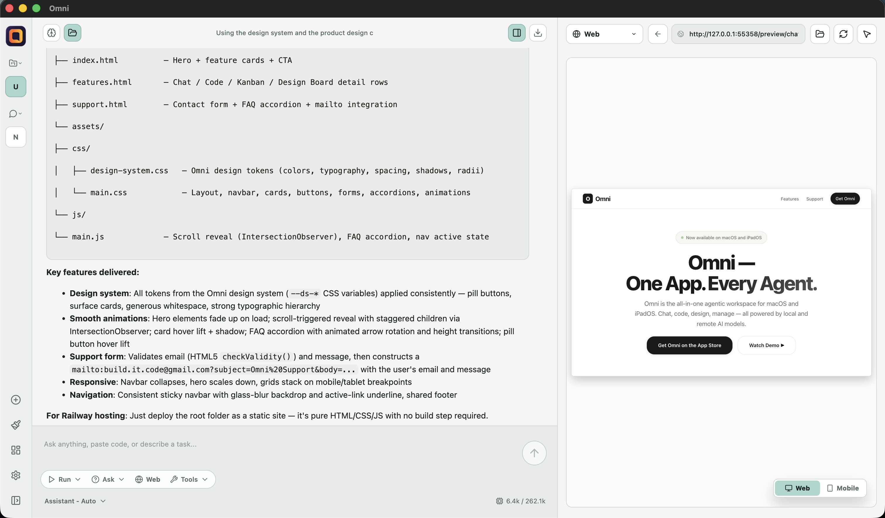
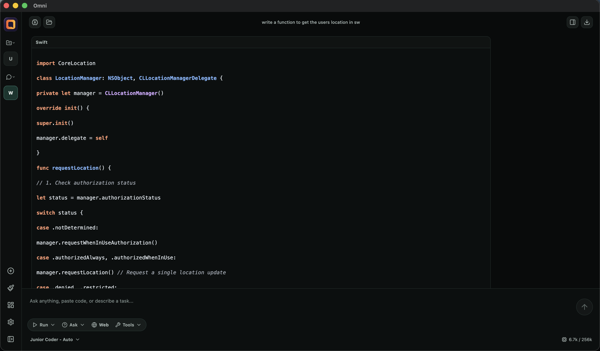
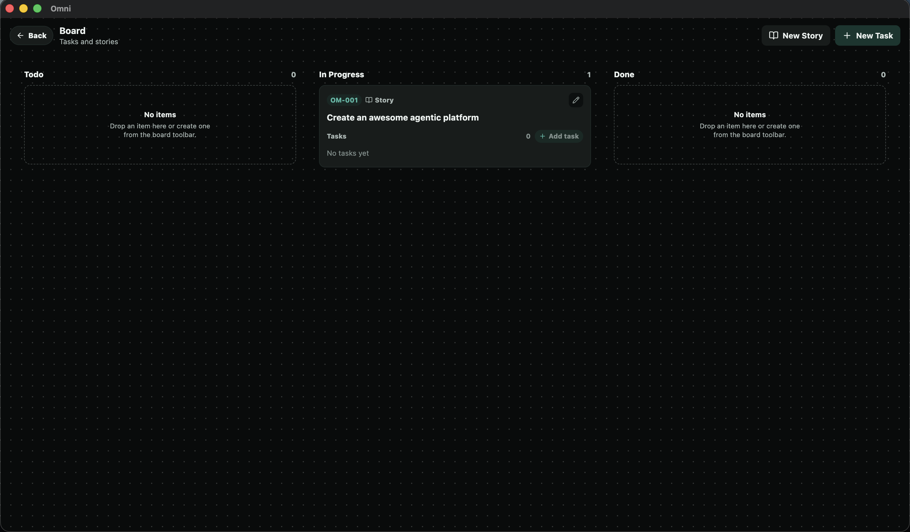
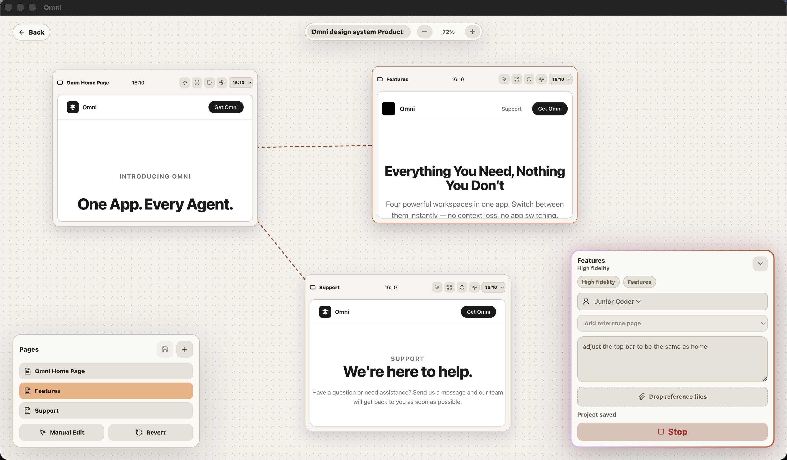

Everything You Need, Nothing You Don't
Four powerful workspaces in one app. Switch between them instantly — no context loss, no app switching.

Chat
Chat with any AI model — local or remote. Omni manages context, memory, and tool use so you can focus on the conversation.
- ✓ Multi-model switching — pick the right model for each task
- ✓ Persistent conversations with full context
- ✓ Tool use and plugin integration
- ✓ Local-first: your chats stay on-device

Code
Write, debug, and refactor code with AI assistance built right in. Omni understands your codebase and helps you move faster.
- ✓ Syntax highlighting for 50+ languages
- ✓ AI-assisted code generation and refactoring
- ✓ Inline debugging with real-time feedback
- ✓ Integrated terminal with smart autocomplete

Kanban
Manage projects visually with drag-and-drop boards and smart automation. Keep your team aligned without leaving your workspace.
- ✓ Drag-and-drop task management
- ✓ Smart labels and priority levels
- ✓ Due dates and reminders
- ✓ Board templates for common workflows

Design Board
Figma-like design board for wireframes, prototypes, and visual thinking. Bring your ideas to life with an infinite canvas.
- ✓ Infinite canvas with zoom and pan
- ✓ Component libraries and design tokens
- ✓ Create the perfect design for your coding agent
Ready to experience Omni?
One app. Every agent. All your work, unified.